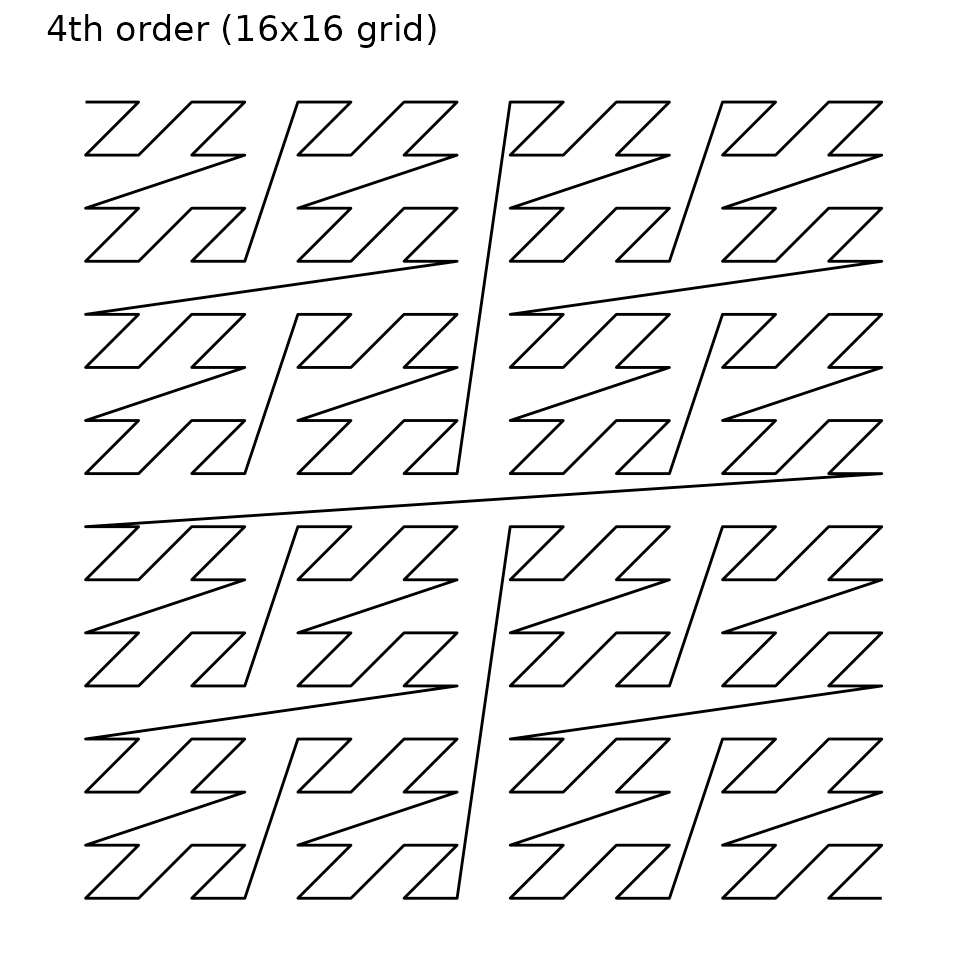
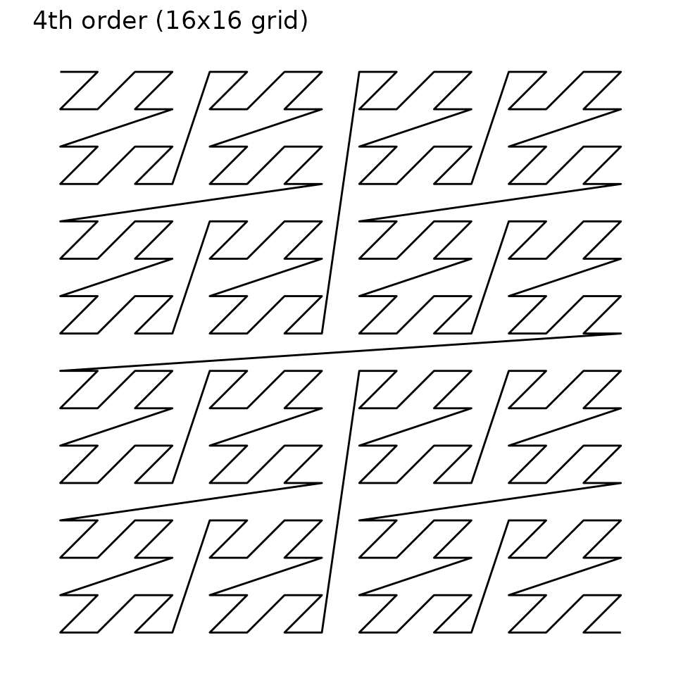

Data visualization of the IP address space is challenging because there are so many unique addresses (approximately 4.3 billion for IPv4 and \(3.8 \times 10^{38}\) for IPv6). But treating it as a continuous scale would not be meaningful, owing to the hierarchical nature of address space.
We can take three actions to tackle this problem:
- Visualize only a subrange of the full address space (i.e. neglecting leading bits)
- Limit resolution by aggregating data within subnetworks (i.e. neglecting trailing bits)
- Transform the one-dimensional address space onto the two-dimensional plane
These actions are handled by the canvas_network, pixel_prefix and curve arguments of the coord_ip() function, respectively. This vignette describes the third action in more detail, to help interpret plots generated using ggip.
Space-filling curves
Inspired by an xkcd comic originally published in December 2006, we use a space-filling curve to map IP data (one-dimensional) to Cartesian coordinates (two-dimensional). Two curves are commonly chosen for this task: the Hilbert curve and the Morton curve (also known as the Z curve). Compared to other space-filling curves, these are advantageous because they preserve locality (i.e. subnetworks remain close together).
The curve order represents how nested the curve is and therefore determines how many data points can be visualized. Conversely, our choices for actions 1 & 2 (see above) determine the order of the plotted curve. The curve order is increased if the canvas displays more address space or if a pixel represents fewer addresses.
Warning: The number of plotted data points grows exponentially with curve order. For this reason, ggip limits the difference in network prefix lengths between the canvas and pixel to 24.
Hilbert curve
IP data is most commonly displayed on a Hilbert curve because it has optimal locality preservation.
This curve starts in the top-left corner and ends in the top-right corner.


Morton curve
The Morton curve technically offers slightly poorer locality preservation than the Hilbert curve. However, the discontinuous jumps in the curve actually correspond to crossing IP network boundaries. In this sense, the Morton curve is a more natural representation of the IP network structure. For example, the start and end addresses of a network are always located diagonally across from each other.
This curve starts in the top-left corner and ends in the bottom-right corner.

 
